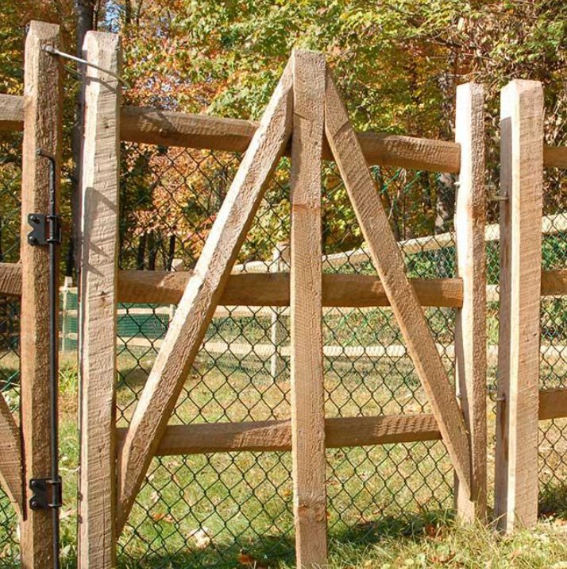
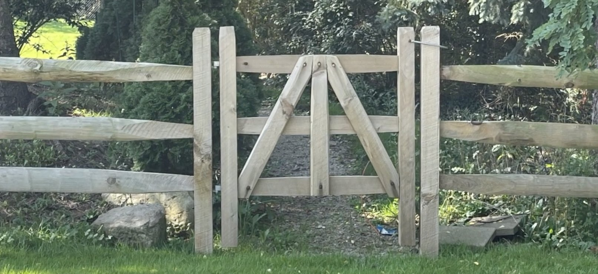
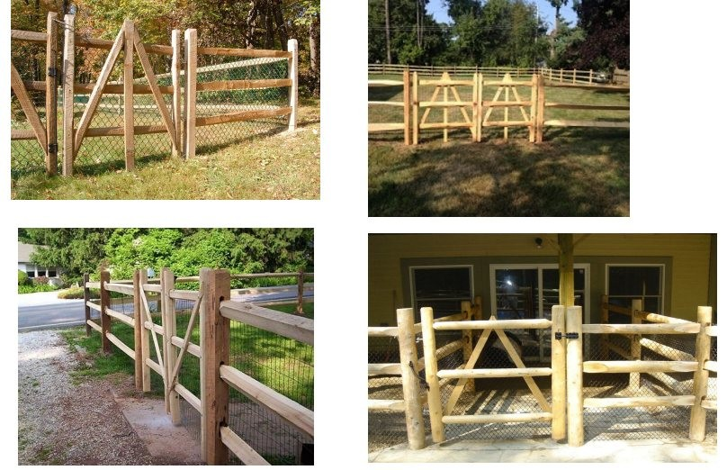
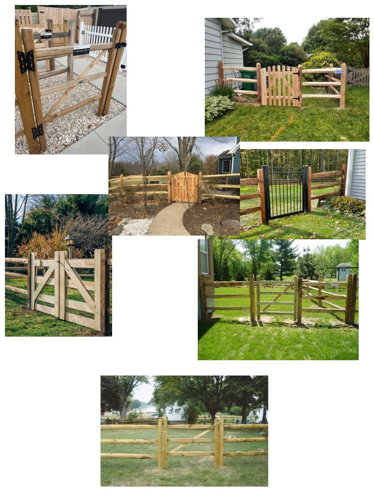

Fence & Gate Guidelines
Westwind requires split-rail fencing with an A-frame gate. This is the single most common source of ACC violation letters in the community. This gate and fence page exists to make the standard unmistakably clear before you buy materials or hire a contractor.
The Rule, Plainly
Any fence at Westwind must be natural, unpainted split-rail (two or three horizontal rough-hewn rails through routed posts). Any gate in that fence must include an A-frame brace: two angled boards running from the bottom corners up to a peak above the top rail, plus a vertical piece dropping from that peak straight down to just below the bottom rail. That's what keeps the gate square and rigid over time. Picket, panel, lattice, metal, and vinyl gates or fences are not permitted, even if attached to an otherwise-compliant split-rail fence. This request must go through the ACC before installation. See the Exterior Modification Form.
What a Correct Fix or Replacement Looks Like
This is exactly what the board wants to see when a gate is repaired or replaced, whether it's a single gate or a double gate, the A-frame brace is the non-negotiable part.


Note the brace running corner-to-corner on every gate leaf. That diagonal is what makes a gate compliant, on a single gate or a double.
Recommended vs. Non-Recommended Styles
These photos are drawn directly from the board's official fence and gate reference document.
Recommended styles
Split rail with a clear A-frame brace on the gate leaf, natural unfinished wood, chain-link mesh backing where pet containment is needed.

Non-recommended styles
Picket gates, solid wood panel gates, lattice/arbor-style gates, and black metal gates do not meet the standard, even when paired with a compliant split-rail fence.

Also Repainting Siding, Trim, or a Door?
Fences at Westwind stay natural, unpainted wood, but house colors are a separate approval topic. See the Approved Colors page.